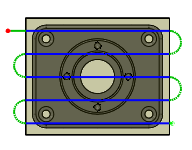

<div id="fromOtherSide"><p>ツールパスがパーツの反対側から始まるように指定します。</p>
<table class="tipTable" cellspacing="10">
<tr>
<td><center></center></td>
<td><center></center></td>
</tr><tr>
<td><center><p><b>未選択状態</b></p></center></td>
<td><center><p><b>選択済み</b></p></center></td>
</tr></table>
</div>